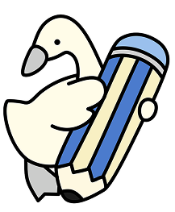
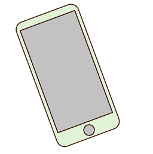
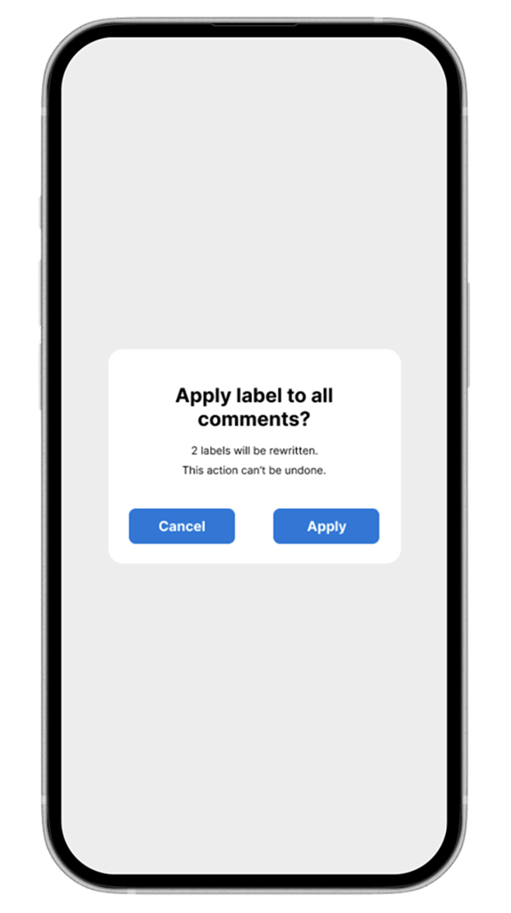
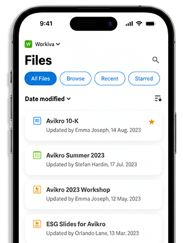
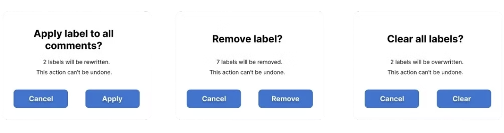
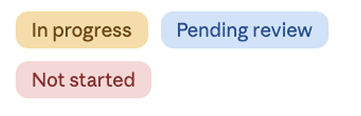
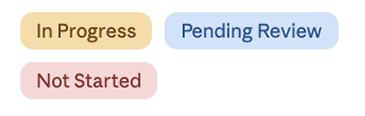
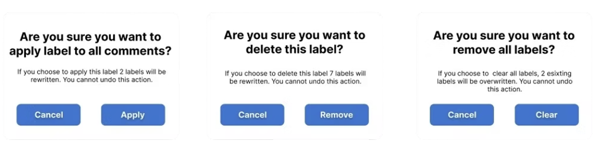
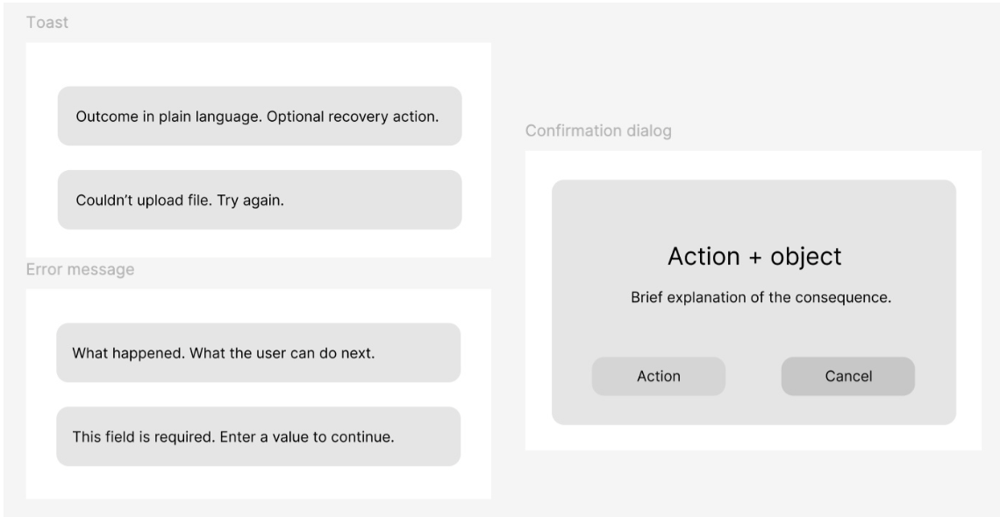
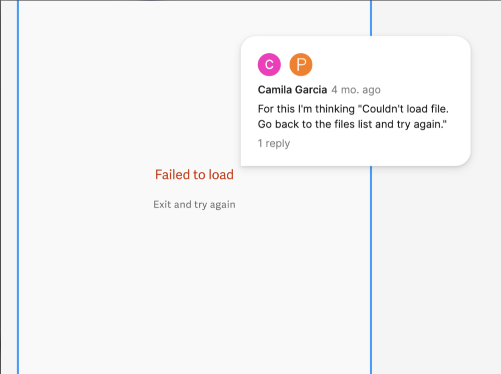

During my content design internship at Workiva, I built a scalable content system for a beta mobile app. The goal: one consistent, trustworthy voice across the app and its help documentation, in a regulated financial environment.




I was the first content designer on Workiva's mobile app, and its copy didn't match the rest of the platform or follow our style guide. In a regulated financial product, inconsistency erodes trust. Every word had to earn its place.
The product was strong. The content wasn't reinforcing that strength.
Mixed casing across similar screens
Alarmist error language
Redundant confirmation prompts
Different tone on web and mobile
Impact of
inconsistency
So, I took charge of building a system that would bring the experience into alignment.
Rather than fixing copy screen by screen, I built a system to fix it everywhere: a set of guiding principles, a full content audit, and repeatable patterns for casing, toasts, and confirmation dialogs.
The issue wasn't sentence quality. It was structural inconsistency. To scale effectively, the app needed a content system that felt:
01
Every message says what happened and what to do next.
02
Predictable patterns across flows.
03
Errors guide users instead of alarming them.
04
Ready for localization and growth.
I audited all user-facing content in the mobile app and catalogued inconsistencies in casing, tone, and length.
It not only followed new changes to our style guide, it also supported a separate localization project we were working on during my time there.
Status labels

Table headers
Menus
Empty states
File details
One of my favorite fixes: replacing "Failed" with "Couldn't", because no one deserves to be yelled at by a toast.
I trimmed them down, removed polite-but-unnecessary fear-mongering, and made the actions the star of the show.
Before

After
Note: With a design lens, I'd go one step further. Cancel is now a neutral gray and the action stays blue, so the two choices are visually distinct and users can tell them apart at a glance, not just by the words.
I built reusable copy templates for error messages, confirmation dialogs, empty states, and toasts, so new content designers could start from our voice and guidelines.

I partnered with the Product Manager and engineers to review changes in context, catching edge cases like timing and truncation so messages worked in production, not just in mockups.

With the UI aligned, the next question was: would the voice hold outside the app?
I built a library of 7 mobile-specific help articles grounded in the same principles:
With the system in place, individual messages became sharper. Content design isn't just about refining words. It's about building structures that support confident user decisions.
She readily took on the mobile app project and actively seeks out feedback on in-app copy from the team. When she had to create a series of new help articles on her own, she learned organizational strategies from others and applied those learnings to her own work, which shows that she is open to trying different processes to figure out what works best for her.
Working on a beta product reinforced the importance of establishing systems early — before scale amplifies inconsistency. What began as scattered tone differences revealed a structural gap.
By addressing it holistically, I helped create alignment across UI and documentation. In regulated environments especially, clarity builds trust.
Content design is systems design. Every word decision is a design decision — and the best ones hold up at scale.
Extend the content system into onboarding and empty states.
Build a living style guide to maintain consistency as the team grows.
Test localization readiness across the revised copy patterns.